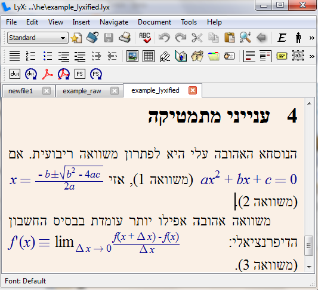

ליקס היא תוכנה להכנת מסמכים עם תמיכה מוצלחת למדי במתמטיקה (וגם בעברית). הגישה של ליקס וצורת העבודה איתה שונים למדי ממעבדי תמלילים אחרים (כמו MS Word או Open Office Writer). ליקס מיועד לאנשים שרוצים לייצר מסמכים יפים, אך לא להתעסק עם עיצוב מפורט של המסמך.
ליקס היא ממשק גראפי ל LaTeX , שפה סטנדרטית לכתיבת מאמרים, ספרים ומסמכים מדעיים. ליקס מאפשר ליצור את מרבית מסמכי ה-LaTeX ללא צורך בקוד, ומאפשר להכניס קוד LaTeX נוסף על מנת לאפשר תכונות שאינן נתמכות בממשק הגרפי.
ליקס היא תונכה חופשית, וזמינה בחינם בכל מערכות ההפעלה הנפוצות למחשבים אישיים (Windows, Linux. OS X).
במהלך הסדנה ינתנו מספר תרגילים קצרצרים ותוכלו להתנסות ולשאול שאלות בהתאם. מספר המחשבים השולחניים הזמינים במקום קטן ממספר הנרשמים לסדנה ולכן כדאי להגיע עם מחשב נייד עם פייתון מותקן.
הסדנה מניחה ידע מוקדם בשפת תכנות כלשהי: הכרות כללית עם מושגים כמו פונקציות, לולאות, משתנים וכו'.
בלינוקס יש להתקין באמצעות מנהל החבילות של ההפצה את החבילות של LyX ושל TeXLive. באובונטו או דביאן, ניתן לעשות זאת על ידי הקלדת הפקודה,
$ sudo apt-get install lyx
לשם תמיכה בעברית, יש להתקין את החבילה Culmus LaTeX, לפי ההוראות באתר.
בחלונות יש להתקין את ליקס מדף ההורדות באתר. מומלץ להתקין את החבילה ה"גדולה" (ה "Bundle" ) שמכילה גם את ההתקנה הנדרשת של LaTeX. הקישור להורדה באתר של ליקס נוטה לא לעבוד לעיטים. במקרה כזה, ניתן להוריד את ההתקנה מה-mirror המוצע בתחתית הדף.
לשם תמיכה בעברית, יש להתקין את Culmus LaTeX מאתר זה.
התקנת פייתון לווינדוס, המכילה, בין השאר, את כל הכלים שנשתמש בהם בסדנה. החבילה יכולה להיות מותקנת במתכונת "פורטבילית", על כונן נייד, או ללא הרשאות ניהול במחשב. מומלץ להתקין את גרסא 2.7.x.
קורס מקיף אודות פייתון ופייתון לשימוש מדעי. המקור העיקרי לסדרת ההרצאות הזו.
האתר הרשמי של פייתון
אתר אינטראקטיבי ללימוד פייתון. מאפשר לכתוב ולהריץ קוד בתוך האתר.
מדריך תכנות פייתון בעברית. עוד לא מושלם.
מדריך תכנות פייתון בעברית. קצת ישן, אבל נחמד.
עדיין בבניה.